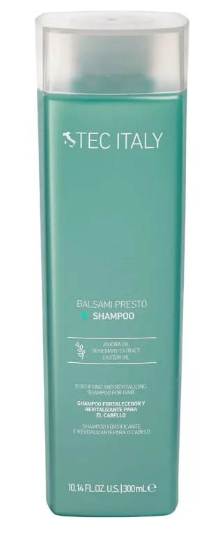
Balsami Presto Shampoo 300 ml
Shampoo fortalecedor y revitalizante para cabello reseco. Ayuda a hidratar y mejorar visiblemente la apariencia del cabello.
Consultar costo
Consultar disponibilidad
Catálogo profesional
Consulta productos disponibles para hidratación, reparación, nutrición, color y estilizado del cabello en Estética Rachelle, Misantla.
Productos
Revisa el catálogo y pregunta por costo y disponibilidad. No se muestran precios hasta confirmarlos directamente con Estética Rachelle.

Shampoo fortalecedor y revitalizante para cabello reseco. Ayuda a hidratar y mejorar visiblemente la apariencia del cabello.
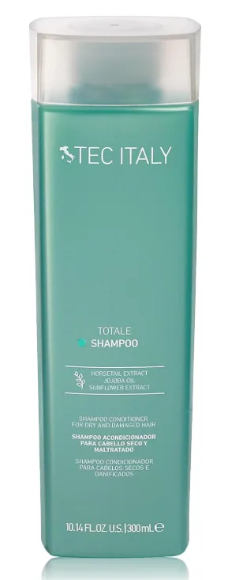
Shampoo acondicionador para cabello seco y maltratado. Ayuda a limpiar suavemente mientras aporta humectación y suavidad.
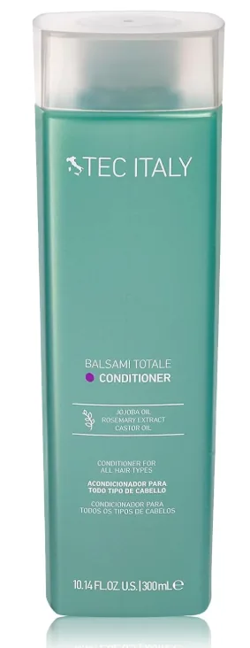
Acondicionador para todo tipo de cabello. Ayuda a desenredar, suavizar y dejar una sensación de ligereza y manejo fácil.
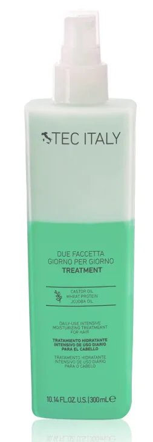
Tratamiento bifásico hidratante de uso diario. Ayuda a recuperar humectación, suavidad y manejabilidad.
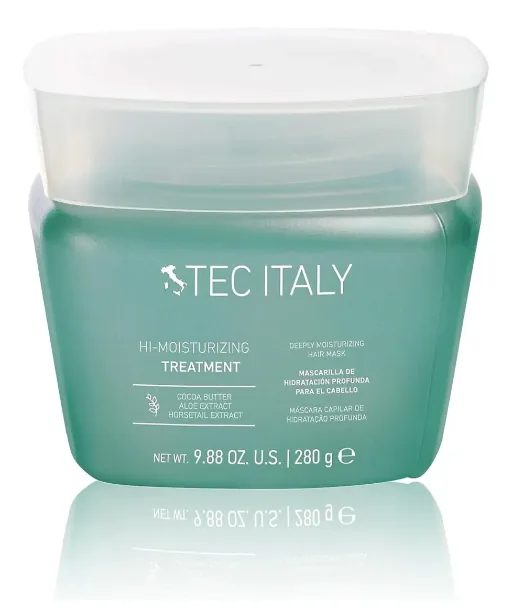
Mascarilla de hidratación intensiva para cabello reseco o dañado. Aporta acondicionamiento profundo, suavidad y brillo.
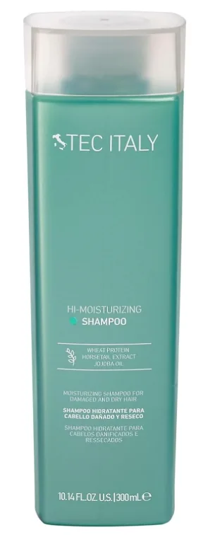
Shampoo hidratante para cabello dañado y reseco. Ayuda a suavizar, humectar y mejorar la apariencia del cabello.
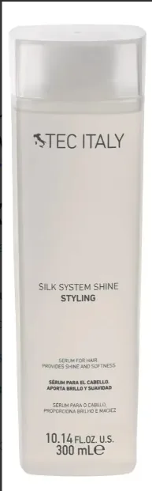
Sérum abrillantador para finalizar el peinado. Aporta brillo, suavidad, control de frizz y acabado elegante.
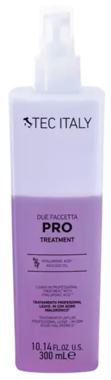
Tratamiento profesional bifásico multipropósito. Ayuda a hidratar, suavizar, equilibrar porosidad y preparar el cabello.
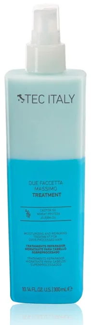
Tratamiento hidratante y reparador para cabello sobreprocesado. Ayuda a restaurar suavidad, humectación y manejabilidad.
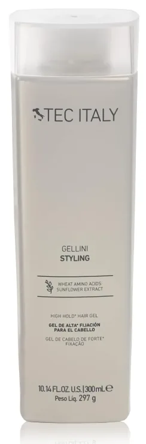
Gel de alta fijación para crear estilos con aspecto húmedo. Ayuda a definir sin dejar residuos pesados.
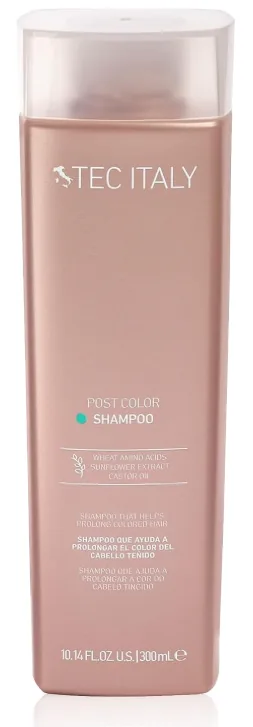
Shampoo para cabello teñido. Ayuda a prolongar el color, cuidar la fibra capilar y mantener una apariencia luminosa.
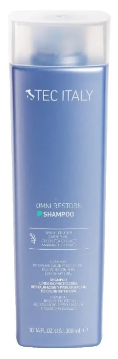
Shampoo de protección, restauración y prolongación del color. Ideal para cabello con color o extensiones que necesita cuidado intensivo.
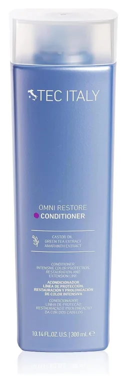
Acondicionador para protección intensiva del color, restauración y extensión. Ayuda a suavizar, desenredar y proteger la fibra capilar.
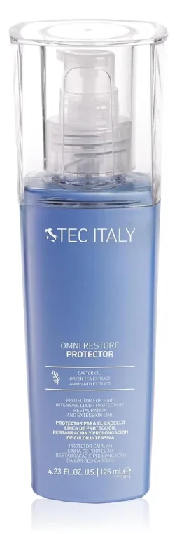
Protector para el cabello de la línea Omni Restore. Ayuda a cuidar el color, proteger la fibra y complementar la rutina de restauración intensiva.
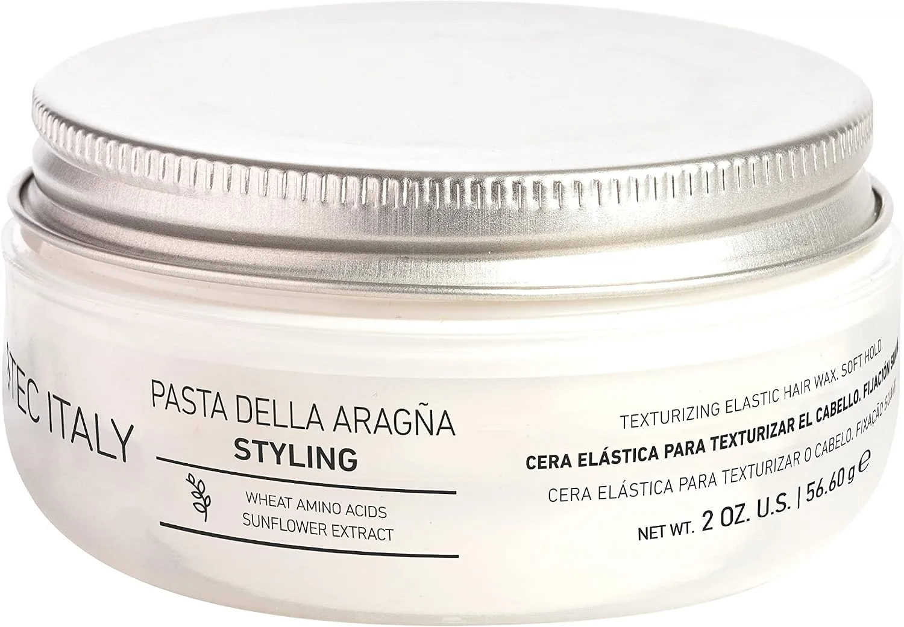
Cera o pasta elástica para crear textura, volumen y definición. Ideal para moldear peinados con acabado moderno.
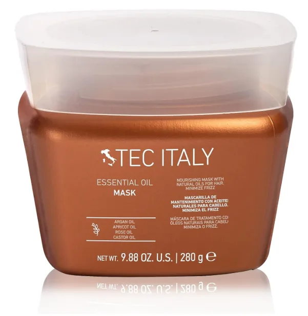
Mascarilla con aceites naturales. Mejora la peinabilidad, ayuda al desenredo y aporta luminosidad al cabello.
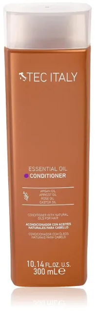
Acondicionador con aceites naturales. Ayuda a suavizar, nutrir y facilitar el desenredo del cabello.
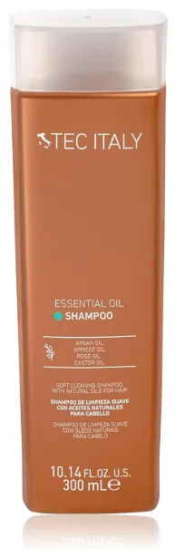
Shampoo con aceites naturales para limpieza suave y nutrición. Ideal para aportar suavidad y una fragancia agradable.
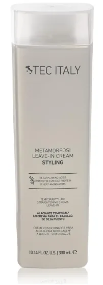
Crema leave-in para ayudar al alaciado temporal. Aporta brillo, protección térmica y control de volumen y frizz.
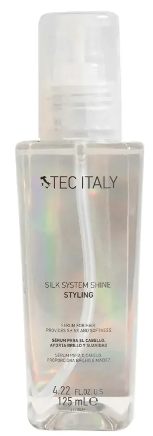
Sérum abrillantador en presentación de 125 ml. Ayuda a controlar frizz, aportar suavidad y sellar puntas.
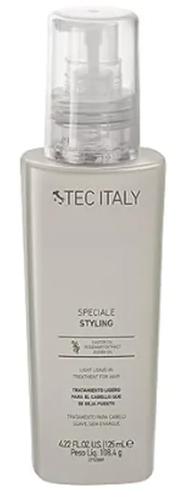
Tratamiento ligero sin enjuague. Protege del calor, controla el frizz y ayuda a realzar la textura natural del cabello.
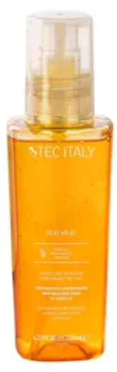
Tratamiento concentrado revitalizante. Ayuda a restaurar humectación, suavidad, luminosidad y reducir el frizz.
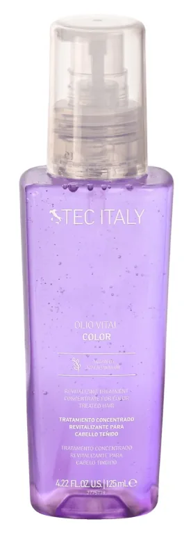
Tratamiento para cabello teñido. Ayuda a hidratar, suavizar, aportar brillo y proteger la apariencia del color.
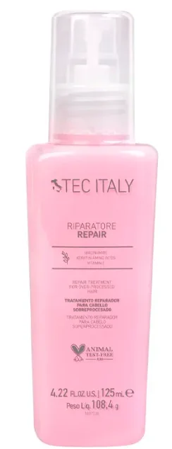
Tratamiento sin enjuague para cabello dañado o tratado químicamente. Ayuda a reparar, fortalecer y mejorar la elasticidad.
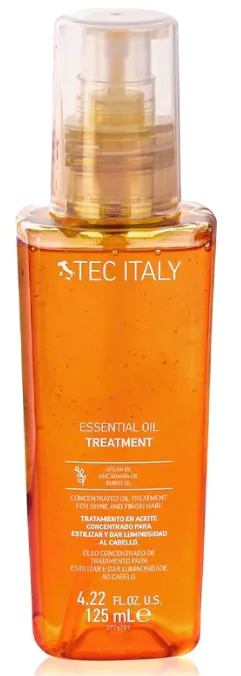
Tratamiento en aceite concentrado. Nutre sin dejar sensación pesada, suaviza y ayuda a minimizar puntas abiertas.
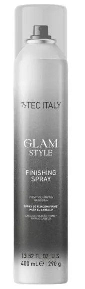
Spray finalizador para fijar el peinado y mantener el estilo. Ideal para dar acabado profesional al look.